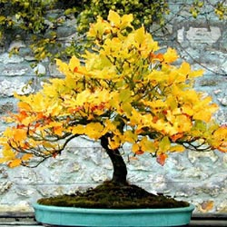
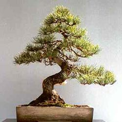
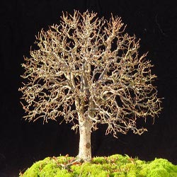

 |
Estilo chokkan: Rigurosamente vertical. Tronco derecho y vertical, afilándose uniformemente desde la base hasta el ápice. Forma ideal, muy utilizada en las especies coníferas. |
 |
Estilo Moyogi: Libre vertical. Es el más corriente de todos los estilos de bonsái. El tronco describe una sucesión de curvas desde la base hasta el ápice. Las curvas son cada vez menos pronunciadas, a medida que el tronco si afila. Forma utilizada en las especias coníferas y los árboles hojosos. |
 |
Estilo hokidachi: Es es estilo de bonsái que más se parece a un árbol. El tronco es derecho y las ramas se extienden como una especia de escoba. Todas las ramas nacen a la misma altura, de modo que la cima es simétrica y redondeada. Este estilo se utiliza preferentemente en las especies hojosas. |